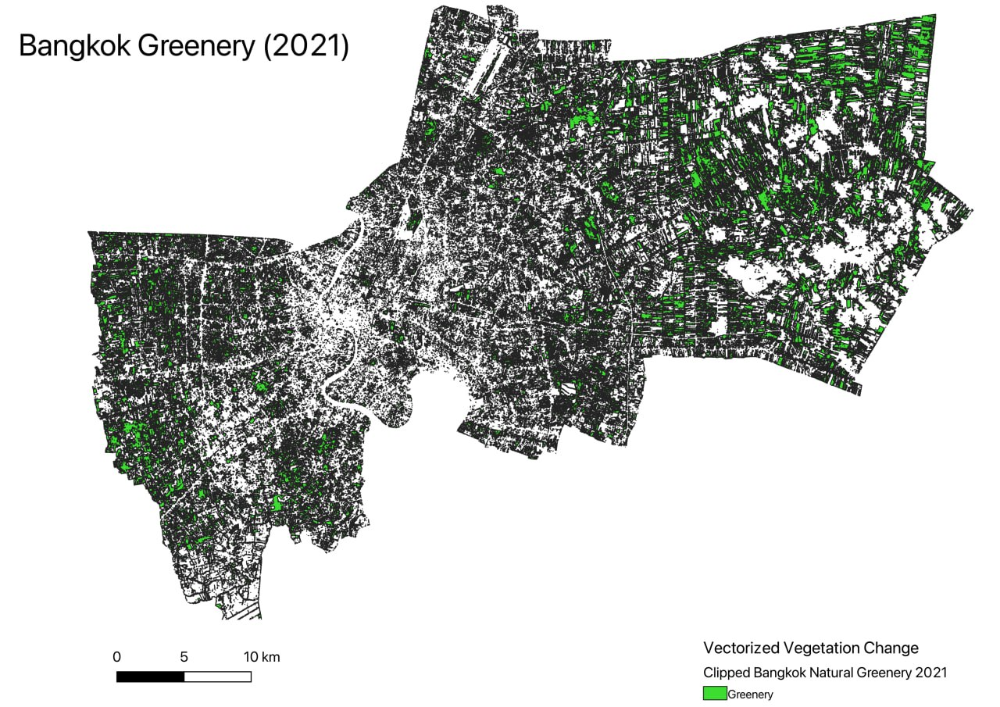
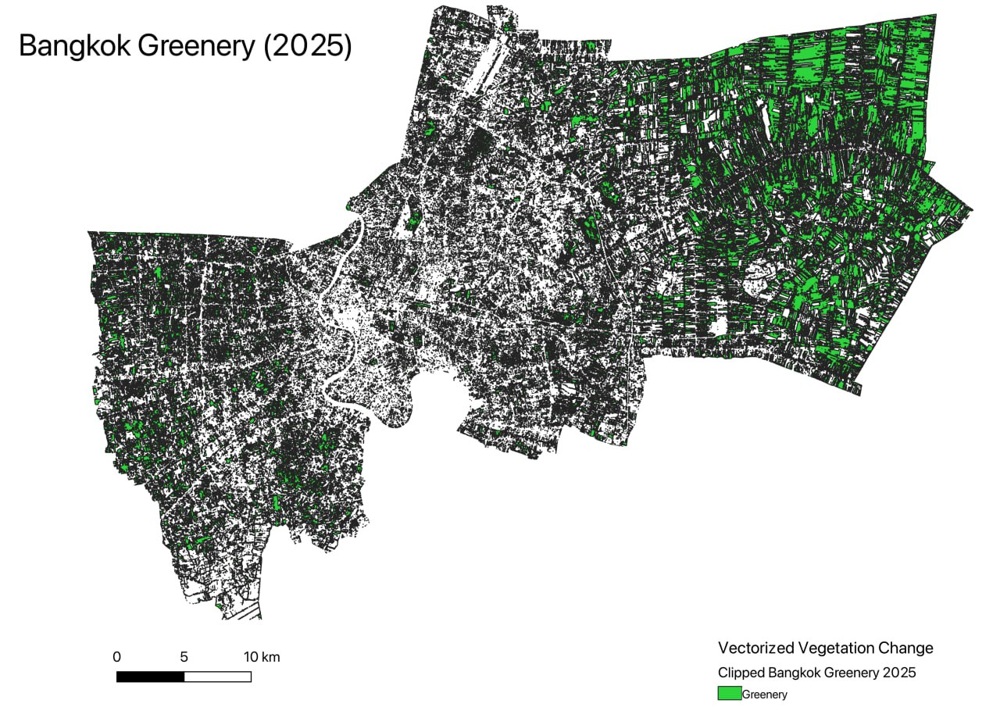
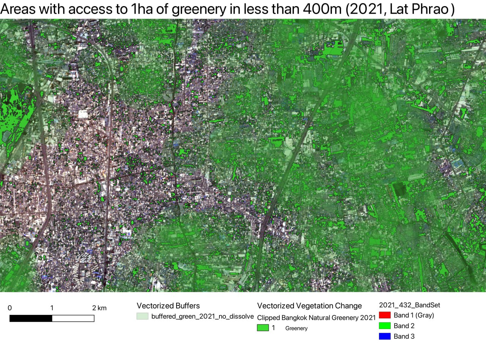
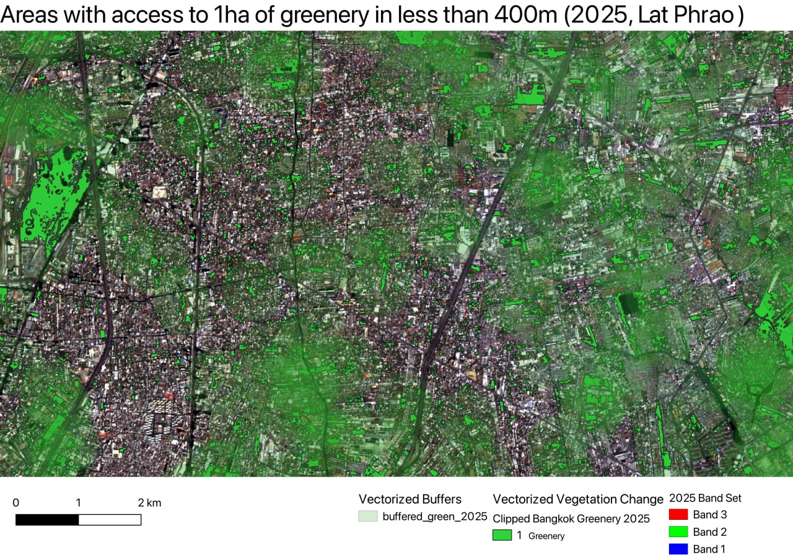
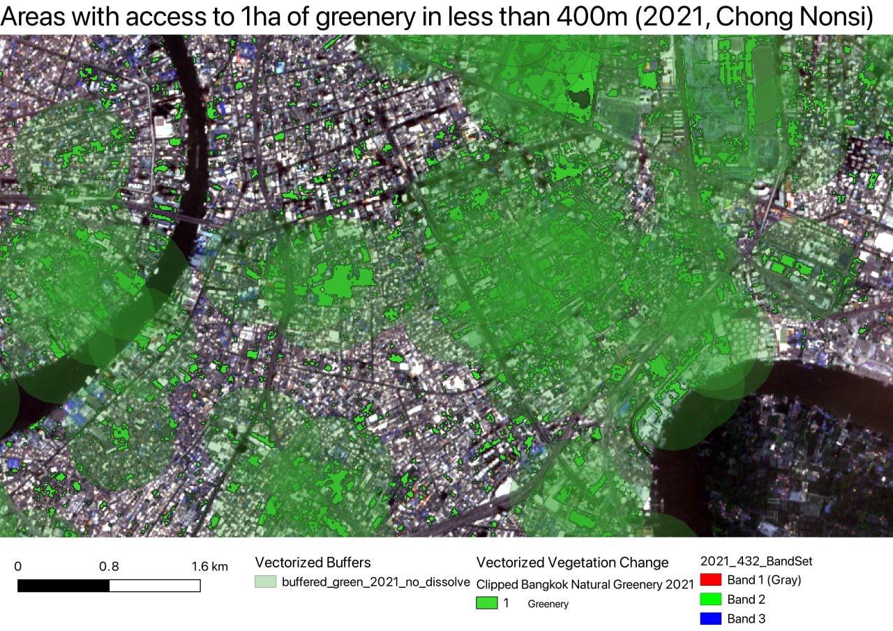
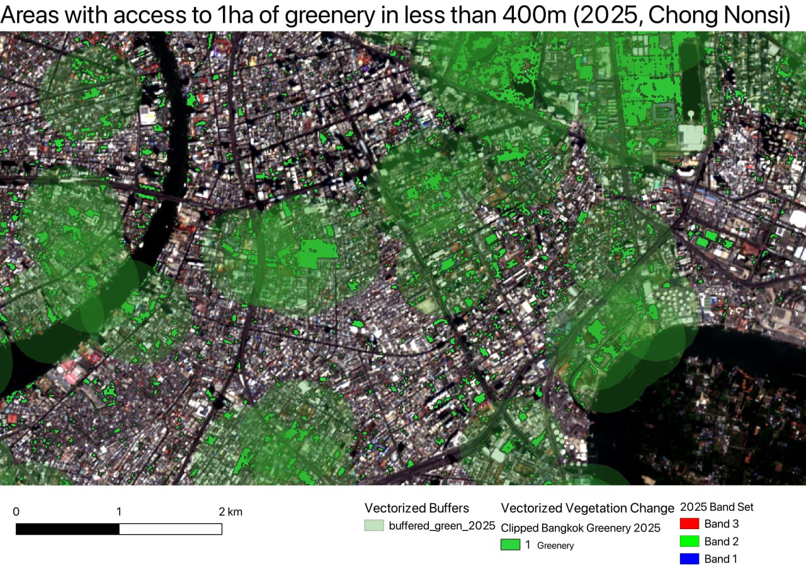

Methodology
PREPARATION PROCEDURES
1.0.1 Data Preparation
Goal: To download and prepare data 1. Download Copernicus data:
On the Copernicus portal, select Copernicus L2A data for the Bangkok region. The filtering criteria would be <5% cloud cover, and between January - March of 2020 and 2025. Download Bangkok GIS data:
Obtain the GeoJSON of the Bangkok Administrative Area
1.0.2 Data Loading
Load the Copernicus datasets into QGIS.
Only load the B02, B03, B04, B08 layers for 2021 and 2025. Rename them according to the convention “B0[]_202[]“” and group them by year into groups.
Load the Bangkok GeoJSON into QGIS.
After loading, select attributes by Administrative Region = Bangkok. Save the selected attributes into a new layer, “Bangkok” and use it in place of the full layer.
1.1.0 Data exploration
Band Set creation
For each year, create a new band set. Ensure the bands are in ascending order. After which, use the SCP plugin to use 4 - 3 - 2 False Color Composite and save the band set by year. This will help us easily identify vegeration from the raster data.
Normalized Difference Vegetation Index (NDVI) layers
Create NDVI layers for each year by using the raster calculator using the formula (B08 - B04) / (B08 + B04). Save the layer after checking. Once both years’ layers are created, created a difference layer using the formula (2025 NDVI - 2021 NDVI) to identify change in NDVI.


2.0.1 Areas of Interest
Clip all raster layers to the Bangkok vector
Within the Bangkok region, bookmark the residential area of Lat Phrao and the CBD area of Chong Nonsi for further detailed analysis.
3.2.1 Increasing ratio of green spaces
Goal: To determine whether Bangkok meets the target of 10 square meters of green space per person by comparing green space areas and population data between 2021 and 2025.
Prepare Data for Area Calculation:
The clipped green space layers for both 2021 and 2025 were projected to EPSG:32647 (UTM Zone 47N) to ensure accurate area calculations in square meters.
Calculate Green Space Area:
The Field Calculator was used to create a new field named area using the expression:
$area
This calculated the area of each polygon feature in square meters.
Select Public Green Spaces:
The Select Features by Expression tool was used to isolate only green space features classified as public.
The following expression was applied:
“2025_Vectored_Green” = 1
Compute Total Green Space Area:
The Statistics Panel was used to sum the values in the area field for the selected features.
The total green space areas were:
2025: 484,421,000 m² (484.421 km²) 2021: 437,733,000 m² (437.733 km²)Calculate Net Change in Green Space:
The difference between the two years was calculated:
Increase: 46.688 km² of green space from 2021 to 2025Obtain Population Data:
According to Macrotrends (n.d.), the population of Bangkok was:
2021: 10,723,000 people 2025: 11,392,000 peopleCalculate Green Space Per Person (GSPP):
The formula used:
GSPP = Total Green Space Area (m²) / Population
Results:
2021 GSPP: 40.8 sqm/person 2025 GSPP: 42.5 sqm/personConclusion:
Both years’ calculations exceed the minimum target of 10 sqm per person, with a modest increase of 1.7 sqm/person from 2021 to 2025.
This would indicates positive progress in enhancing urban green space access in Bangkok. However, this differs significantly from the publicly available data of 6sqm per person in 2021 and 7.3 sqm per person in 2025. We believe this to be differences in urban boundary establishment and / or differences in population statistics, to which we were unable to find official sources to determine the geographical boundary or population number to calculate from. Nevertheless, both the official and our calculated statistic reflects a growing urban greenery area in Bangkok.
3.2.2 Increasing public green spaces
Applying an Area Threshold
To ensure meaningful analysis of publicly accessible green spaces, an area threshold of 10,000 m² (1 hectare) was applied. This step filters out minor vegetation features such as street medians, roadside trees, and small decorative patches, which are unlikely to serve as formal public parks or recreational areas.
Expression used in QGIS:
“2021_Vectored_Gr” = 1 AND “area” > 10000
This refinement:
Retains only green features larger than 10,000 m²
Likely captures significant green zones such as public parks and urban forests
Eliminates smaller, non-functional or inaccessible green patches
The resulting dataset allows for a more realistic assessment of green space accessibility.
2021 Analysis: In 2021, filtered features from the “Clipped Natural Greenery 2021” layer were buffered using a 400-meter radius to represent walkable access to green areas. The output was dissolved to prevent overlap inflation and clipped to Bangkok’s administrative boundary.
Buffered Area: 346,418,000 m²
Total Bangkok Area: ~1,570,000,000 m²
Accessibility Coverage: 22.06%
This indicates that just over one-fifth of the city was within 400 meters of a significant public green space in 2021.
2025 Analysis: Using the same methodology, the 2025 dataset was filtered and processed. The buffer zone was again limited to 400 meters, dissolved, and clipped to Bangkok’s boundary.
Buffered Area: 394,777,000 m²
Accessibility Coverage: 25.14%
This shows a modest increase in access, reflecting some progress toward Bangkok’s green space targets.
Conclusion: From 2021 to 2025, the proportion of Bangkok’s land area within 400 meters of large public green spaces increased from 22.06% to 25.14%, reflecting a 3.08 percentage point improvement.
While this growth is positive, it still falls short of the 50% target for universal walkable access to green spaces. This highlights the need for continued investment in park development, better spatial planning, and potentially more equitable green space distribution across the city.
3.2.3 Urban Tree Canopy




To evaluate changes in visible tree cover across Bangkok from 2021 to 2025, a multi-step remote sensing approach was used:
Satellite Imagery Selection Copernicus Sentinel-2 Level 2A data was sourced for January–March 2021 and 2025, with cloud cover below 5%.
NDVI & Band Selection A vegetation density index was created using bands B02, B03, B04, and B08 at 10-meter resolution.
Tree Detection via Classification A Random Forest classification model was trained to detect tree cover specifically, improving differentiation between grass, shrubs, and trees.
Vectorization & Area Calculation The classified raster was vectorized to allow for area-based analysis of greenery.
Urban Tree Canopy Ratio Tree canopy ratio was calculated using:
Tree Canopy Ratio = Greenery Area / Total Area of Sample Location
This was applied to two contrasting urban zones — Chong Nonsi (CBD) and Lat Phrao (Residential) — to compare greenery in dense vs. suburban context
Results: 2021: 16.6% 2025: 19%
Conclusion: Between 2021 and 2025, Bangkok’s urban tree canopy ratio increased from 16.6% to 19%, indicating a positive trend in visible tree coverage. This growth suggests that efforts to expand urban greenery—whether through tree planting or preserving existing canopy—are beginning to take effect.
However, the relatively small increase (+2.4 percentage points) highlights that progress is gradual and may be uneven across different urban zones. The comparison between Chong Nonsi (CBD) and Lat Phrao (Residential) also reflects the challenge of expanding greenery in high-density areas, where space constraints limit planting opportunities.
This suggests that while the city is moving in the right direction, accelerated and location-sensitive greening strategies are still needed to meet long-term urban sustainability goals.
References
- Macrotrends. (n.d.). Bangkok, Thailand Metro Area Population 1950-2024. Retrieved March 30, 2025, from ‘https://www.macrotrends.net/cities/22617/bangkok/population’